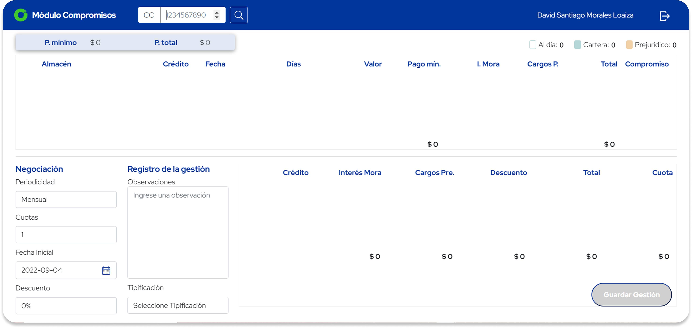
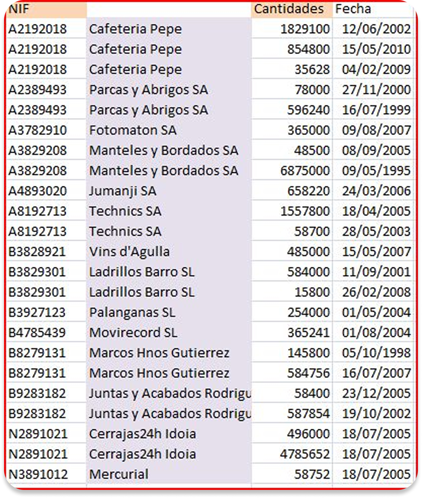

01 Overview
Sistecrédito's collection agents now have a more accessible and understandable interface for managing the company's debt recovery operations.
The main objective was to design a collections interface with well-organized, clearly structured tables easy to read, easy to act on. The redesign targets 43 collection agents who spend their entire workday inside this system, managing hundreds of accounts across dozens of data points simultaneously.
02 Users
Who is this product designed for?
Collection agents
Internal Sistecrédito employees responsible for managing debt recovery from users who are behind on their payments. All of their daily work happens through this interface.
Agent profile
- High technology affinity interacting with complex applications is not a barrier
- Young professionals between 17 and 35 years old
- Work entirely at a computer desktop is the primary and only device
03 Research
We conducted structured interviews with three agents representing different seniority levels. The goal was to surface what the current system failed to provide and understand how agents mentally model their daily work.
Arnaldo Pérez G.
29 años · Agente Senior
What would improve your work?
"An application that lets me view user data more simply and quickly. Something that shows all user records on a single screen whether they're behind on payments or up to date."
What's wrong with the current app?
"It's very complex, slow to load data, and in many situations it's very confusing."
Marlon Parra B.
25 años · Agente Jr
What would improve your work?
"See all data in one place. Our day-to-day involves visualizing a lot of data, and it would be great if it were all on a single screen no need to open and close so many windows."
What's wrong with the current app?
"It doesn't let us optimize or speed up our work. Speed and efficiency are essential when we're dealing with clients and data all day long."
Luis Londoño
32 años · Agente Senior
What would improve your work?
"A design that includes all the records we work with daily, in an interface that's actually understandable."
What's wrong with the current app?
"I've been a collection agent for 3 years and I still struggle to find certain records and navigate the system."
Every agent, regardless of seniority, pointed to the same root problem: too many screens, too many clicks, too much time lost just finding information.
04 The Problem
To interact with the current system, agents go through a fragmented sequence: desktop access → login → application where the application itself branches into Excel exports, pop-up windows, and data scattered across multiple disconnected screens.
This forced agents to take unnecessary actions at every turn, slowing down their debt management workflows and increasing the cognitive load of an already demanding job.

Current interface dense, unstructured table layout that agents must navigate daily

Excel workaround agents exported data to spreadsheets just to make it readable
Agent's current flow
Friction points identified
Slow data loading
The system took too long to display records, forcing agents to wait between every action
No visual hierarchy
All data looked the same no way to quickly distinguish what was urgent from what was not
Constant window switching
Agents had to open and close multiple windows to view a single client's full information
Confusing navigation
Even senior agents with years of experience still struggled to find specific records
Excel as a workaround
Agents exported data to spreadsheets just to be able to read and analyze it properly
No remote access
The system was tied to office equipment agents could not work from home or on a laptop
Fragmented client data
Payment history, contact info and debt status were spread across different sections with no unified view
High onboarding cost
New agents needed weeks to become productive the interface offered no intuitive entry point
05 Design Proposal
The proposal was built around six product objectives each one directly addressing a pain point uncovered in research and aligned with the new Sistecrédito brand identity.
Structure
Design a new architecture grounded in accessibility and visual design fundamentals a quality, consistent, and inclusive interface.
Hierarchy
Every component and element has a purpose. Visual hierarchy guides agents to the most important information without them having to hunt for it.
Modernize
The interface aligns with Sistecrédito's new brand manual product and marketing working in sync, not in isolation.
Accessibility
Designed for all 43 collection agents regardless of their individual conditions a system everyone can use without barriers.
Visual design
Quality and consistency through visual design fundamentals color, contrast, typography scale, and Gestalt principles applied throughout.
Better experience
The digital product will give every collection agent back time optimizing workflows so they can focus on what matters: the client interaction.
06 What the product delivers
Six core capabilities defined around the agent's real context desktop-first, always connected, working with clients from anywhere.
Mail communication
Built-in email templates allow agents to communicate with clients directly from the platform no switching between tools.
Adaptive design
The interface adapts to different screen sizes from large desktop monitors to laptops without sacrificing data density.
Works anywhere
The application functions anywhere in the world, at any hour enabling agents on rotated shifts and different time zones.
Everything on one screen
All relevant client data payment history, debt status, contact info consolidated on a single view. No more window-switching.
Remote-ready
Agents can do their full job from home without needing access to an office workstation or VPN-locked legacy tools.
New agent onboarding
The simplified interface drastically reduces the learning curve new agents reach productivity faster without weeks of training.
The result
Portal de Pagos the new collections interface consolidates all client data, negotiation controls and management records on a single screen
Puede visualizar el prototipo en Figma
Ver prototipo
07 Design system
The proposal is structured around giving agents fast, reliable access to client credit records all on a single screen, with accessible table architecture and clear data hierarchy.
Every decision reduces the number of clicks required. The goal: a single, cohesive experience where data is dense but never hard to parse.
Components
- Pop-ups
- Modals
- Color dots
- Pills
Design fundamentals
- Color & contrast
- Type size & hierarchy
- Table structure
- Gestalt & Fitts' Law
Agent-centered design
The experience is built to be inclusive for all 43 collection agents regardless of their individual needs or conditions. Everyone can understand the interface and deliver quality, efficient service to Sistecrédito clients.